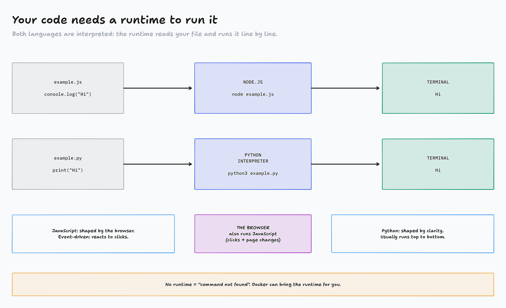
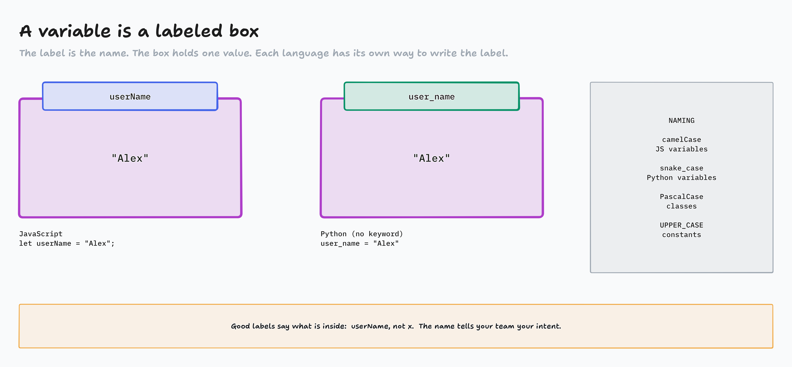
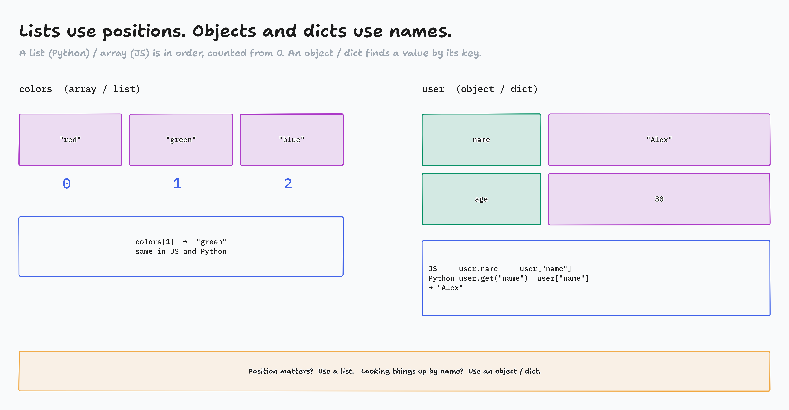

Two languages, one way of thinking
Variables and data types in JavaScript and Python, side by side. You type every line.
Same idea, two spellings
JavaScript
let userName = "Alex"; console.log(userName);
Python
user_name = "Alex" print(user_name)
Both print Alex. Learn the idea once, then learn two spellings.
Why learn both?
JavaScript
- Runs in every browser: clicks change the page
- React, Vue, Angular build big UIs
- Node.js runs it on servers too
- Hard parts: async, events, tools that change fast
Python
- Reads like English: logic over syntax
- Data (pandas), AI (PyTorch), back ends (Django, Flask)
- Fewer lines for the same idea
- Hard parts: indentation rules, dynamic types, speed
They often run in the same system: JS in the browser, Python behind it.

Set up: one folder, and Docker running
1 · Make the folder, open it in VS Code
mkdir fundamentals cd fundamentals code .
code not found? VS Code → File → Open Folder.
2 · Docker is running (VS Code terminal: Ctrl+`)
docker --version docker run --rm hello-world
Mac/Windows: open Docker Desktop first. Same check as Monday.
No Node or Python to install: Docker brings them.
Two Dockerfiles: one runtime each
Dockerfile.node
FROM node:18-alpine WORKDIR /app COPY . . CMD ["node", "example.js"]
Dockerfile.python
FROM python:3.11-slim WORKDIR /app COPY . . CMD ["python3", "example.py"]
docker build -t js-fundamentals -f Dockerfile.node . docker run --rm --init js-fundamentals node primitives.js docker build -t py-fundamentals -f Dockerfile.python . docker run --rm --init py-fundamentals python3 primitives.py
Build after every edit: COPY is a snapshot. Switch languages by switching the base image.
Your first two files create example.js and example.py, then run each

Variables and naming variables.js · variables.py
Primitive types: one value each primitives.js · primitives.py
Primitive types side by side
| JavaScript | Python | |
|---|---|---|
| text | "Hello" · string | "Hello" · str |
| whole number | 10 · number | 10 · int |
| decimal | 9.99 · still number | 9.99 · float (its own type) |
| true / false | true / false | True / False |
| empty on purpose | null | None |
| declared, never set | undefined (JS only) | (no such thing) |
Primitive = one single value. The building blocks of everything else.
Activity: JS, Python, or both?
- A line of code appears
- In chat on "go": JS, PYTHON or BOTH
- "Both" means it runs in both languages without an error
Page: activity-js-or-python/

Lists, objects and dicts collections.js · collections.py
Can it change? mutable.js · mutable.py
![Mutable changes in place; immutable makes a new value. Mutable, like a mutant such as Wolverine: lists or arrays, dicts or objects, and sets. colors.push("blue") in JS or colors.append("blue") in Python changes the same list. Immutable: strings, numbers, booleans. name.toUpperCase() or name.upper() returns a new string and name is unchanged. The bug it causes: two labels, colors and copy, point at one list, so copy.push("pink") gives colors pink too. = does not copy a list; it sticks a second label on the same box.](../diagrams/JP1-04-mutable.png)
Homework, Part I
- Priority 1, Code Lab 1: every file from today in your
fundamentalsfolder, built and run with Docker in your terminal, output matching - Priority 2, FreeCodeCamp: 50 steps of your current certification
Come to Lecture 2 ready
docker run --rm --init js-fundamentals node example.js must print. Lecture 2 is decisions, loops and functions, all code along, all through Docker.